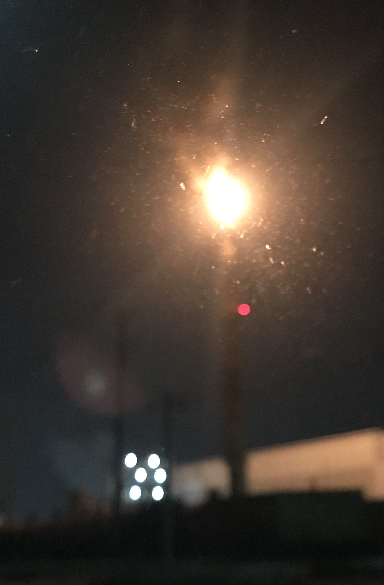

↑
Contact
Work
Identity
Yuriko KAKINO
1997年、富山県高岡市で生まれる。
富山県立高岡高等学校を卒業後、
横浜国立大学経済学部に入学、学業優秀表彰多数。
株式会社エス・エム・エスキャリアにエンジニアとして入職。
University
2016年度後期 学業優秀者表彰 首位
2017年度後期 学業優秀者表彰
2019年度後期 学業優秀者表彰
2018年度 伊集守直ゼミナール ゼミナール長
2018年度 中央大学・立教大学・横浜国立大学合同討論会 幹事校代表
2019年度 中央大学・立教大学・横浜国立大学合同討論会 議長
個人開発
顔認識アプリ / Flask+Vue.js
Kaggle
チーム開発
犬猫判別アプリ / Flask+Vue.js
地図マッピングアプリ / Flask
Other
イラストの雑誌掲載実績多数
Photoshop練習中
